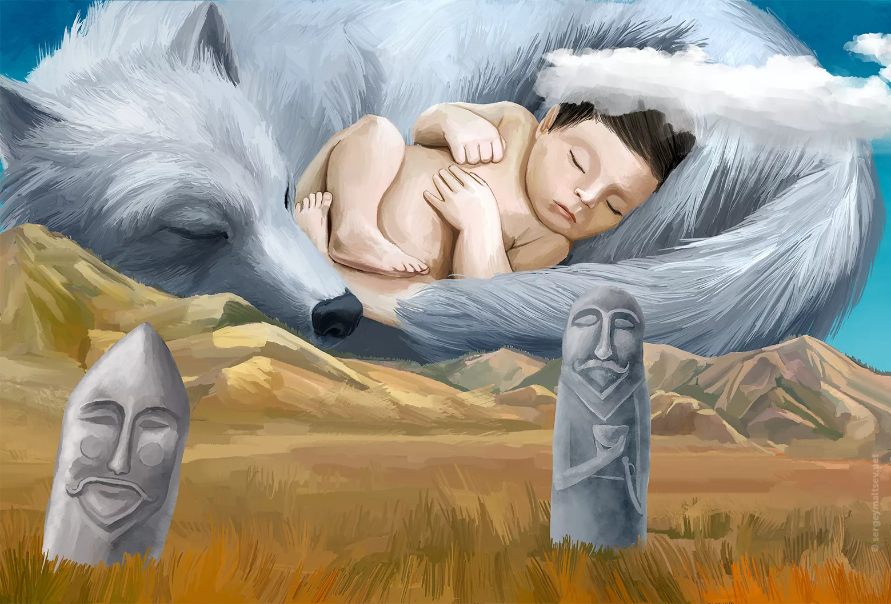
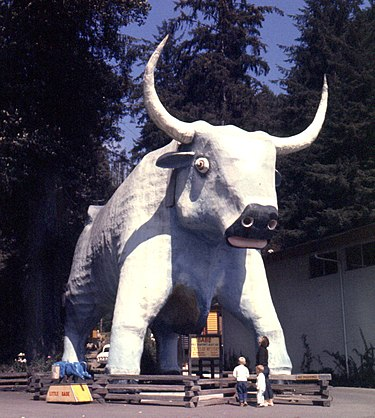

Разделение мифологических персонажей по тотемным признакам.
Кок-Бори (синий волк) - одно из священных понятий тюркской мифологии. В верованиях тюркских народов синий волк является тотемом клана, то есть связующим звеном между Богом и людьми. Волк здесь является исполнителем Божьей воли и магическим символом Бога. С древних времен мифы казахов, тувинцев, якутов воспринимали волка как "Божью собаку". Наши ранние предки не только признавали свою слабость перед хищниками, но и молились за них, зная, что они не принесут вреда, если их будут уважать. Одним из таких элементов был запрет на присвоение волку имени среди кочевого населения. В древнетюркских культурных знаниях о кочевом образе жизни волк был священным обитателем, то есть запрещенным “прямым" именем хищника, и, следовательно, назывался по-разному. До настоящего времени волка называли "собака-птица", "ушастый", "большой синий". Абдуова, Б., Асанова, У., & Ашенова, А.
Кок огыз-мифический образ. Согласно древнему пониманию народов Центральной Азии, эмиром Тенгри сначала была ранена земля, затем была создана голубая, с одним гигантским синим быком, несущим рога на земле и небе, который живет на одной большой рыбе, подобной своей. Земля сотрясается, когда синий бык устал и меняет землю с одного рога на другой, апокалипсис наступает, когда два рога ломаются. Такая вера издавна распространялась среди народов от Волги до Кавказа и Крыма. Следы такого древнего мировоззренческого мифа сохранились у большинства народов мира, только у них зверь, несущий землю, разнообразен: кит, рыба, черепаха и др. Қазақ Энциклопедиясы, 11 - том
